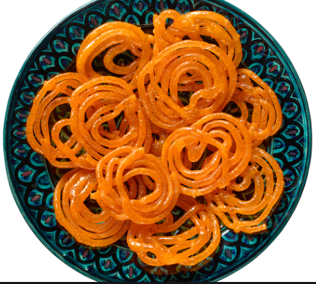
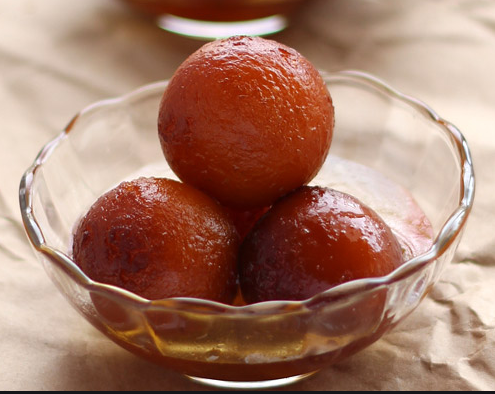
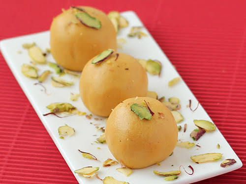
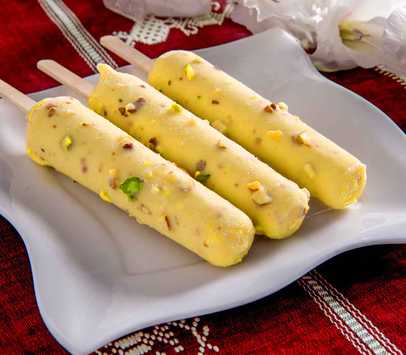
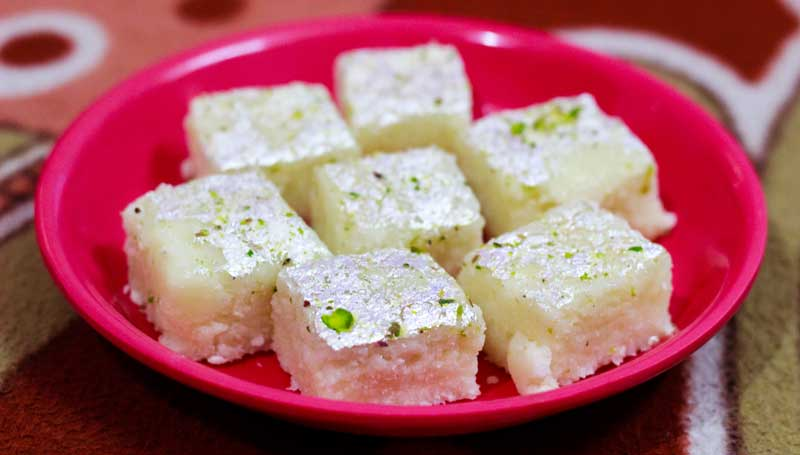
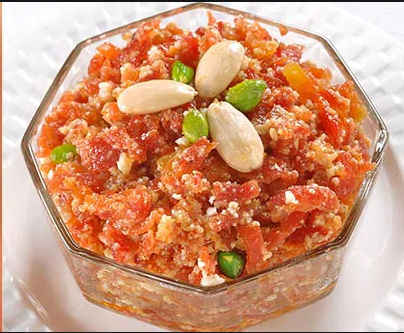
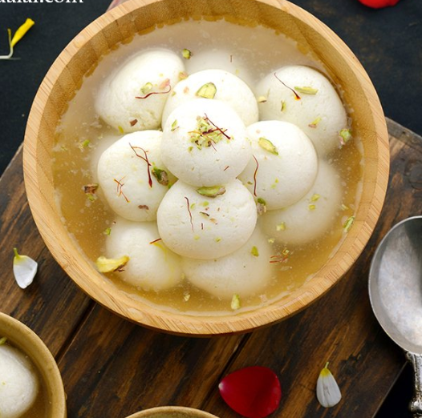
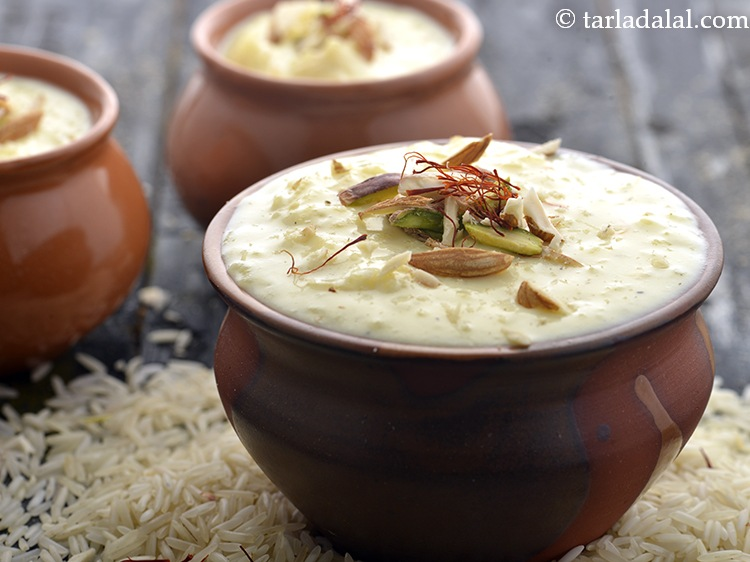

Popular snack made by deep-frying maida flour batter in pretzel or circular shapes, which are then soaked in sugar syrup.
Ingredients
Refined flour 1½ cups
2 cups sugar
1 tablespoon milk
Large pinch of saffron
Pinch of green cardamom powder
Ghee for deep frying
Chopped pistachios to sprinkle
Steps
Take 1½ cups refined flour in a bowl, add 1½ cups water and beat with hand for 15-20 minutes to make a light smooth batter. Cover the bowl
and keep in a warm place to ferment for 12 hours.
Cook sugar with 2 cups water in a deep non-stick pan on high heat, stirring continuously. Add milk, mix well and bring it to boil. Discard
the scum that will rise to the top.
Add saffron and green cardamom powder and mix well. Cook till the sugar syrup reaches one string consistency.
Add the remaining flour to the fermented batter and mix well with your hand.
Heat sufficient ghee in a kadai on medium heat. Pour the fermented jalebi batter in jalebi cloth and pipe the spirals directly into moderately
hot ghee and deep-fry till crisp.
Drain and soak in sugar syrup for 5-10 minutes. Remove from the sugar syrup and place them on a serving platter. Garnish with pistachios.
Gulab Jamun

Soft melt in the mouth, deep fried balls of flour soaked in sugar syrup. There is never an Indian festival without these!
Ingredients
4 cups milk powder
1 cup refined flour
Pinch of soda bicarbonate
2 teaspoon oil + for deep frying
Yogurt as required
4 cups sugar
1 teaspoon green cardamom powder
Steps
Cook the sugar with four cups of water till the sugar dissolves. Add green cardamom power and mix. Keep the syrup warm.
Mix the milk powder, refined flour and soda bicarbonate well together. Add two teaspoons oil and enough yogurt and knead lightly into a soft dough.
Take care not to knead the dough too much.
Divide the dough into marble sized balls.
Heat sufficient oil in a kadai and deep fry the balls over medium heat, stirring occasionally, till golden brown. Drain on absorbent paper.
Add the gulab jamuns to the warm syrup and let it soak for about fifteen minutes to half an hour before serving.
Besan Ladoo

A sphere-shaped sweet, often made of gram flour but can also be made with semolina or chickpea flour.
There are several types of ladoo other than just the besan ladoo.
Ingredients
4 cups coarse gram flour (besan)
1 cup ghee
1 teaspoon green cardamom powder
1 3/4 cups powdered sugar
Cashew nut halves for garnish
Steps
Heat ghee in a non-stick wok, add gram flour and mix well. Roast on medium heat for 30-35 minutes or till fragrant and golden brown. Take the pan off the heat,
transfer the mixture into a large steel parat and allow to cool down.
Add green cardamom powder and powdered sugar when the mixture is still a little warm and mix till well combined.
For making laddoos, take a portion of the mixture and shape it into a ball. Make a slight dent on top and place a cashewnut half in it and press gently.
Arrange them in a serving platter and serve or store in an airtight container.
Kesar Pista Kulfi

A traditional Indian ice cream with a delicious, nutty, caramelized flavor. Characterized by its unusual, conical shape.
Kulfi is usually flavored with traditional Indian ingredients such as pistachio, rose water, and saffron, although some cooks prefer to flavor it with fruits such as
berries. Kulfi has less air and is denser than regular ice cream, because the milk gets more concentrated through the cooking process.
Ingredients
Large pinch of saffron
2 tablespoons coarsely crushed pistachios
1 litre full fat milk
4 green cardamoms
1 tablespoon chopped cashewnuts
Almonds
1 tablespoon cashewnut paste
2 tablespoons condensed milk
Steps
Crush green cardamoms coarsely in a mortar with a pestle. Set aside.
Heat milk in a deep non-stick pan, add crushed cardamoms, mix and boil, stirring frequently, till it reduces to half its quantity.
Discard cardamoms, add pistachios, saffron, cashewnuts, almonds, cashewnut paste and condensed milk, mix well and cook for 5-6 minutes.
Pour the prepared mixture into a jug and further into individual kulfi moulds. Cover the moulds and keep them in the freezer till semi set.
Insert ice cream sticks in the middle of each kulfi and freeze till fully set.
Demould and serve immediately.
Coconut Barfi

Coastal cuisine of India loves the coconut. Barfi is made with a base of condensed milk solids(khoya), granulated sugar, and ghee, and
the most common ingredients added to the base include nuts. Fruits, saffron, rose water, gram flour(besan),
or almonds are also found in some regional varieties.
Ingredients
2 cups scraped fresh coconut
Ghee for greasing
1 cup sugar
1/2 cup fresh cream
Pinch of green cardamom powder
2-3 tablespoons chopped pistachios
2 tablespoons powdered sugar
Silver varq for garnish
Pistachio powder to sprinkle
Steps
Grease a barfi tray with some ghee.
Heat a non-stick pan. Add coconut, sugar, cream and cardamom powder, mix and sauté till the mixture turns golden brown.
Add chopped pistachios and mix well. Switch off heat, add powdered sugar and mix well.
Spread the mixture in the greased tray, garnish with silver varq, sprinkle some pistachio powder on top and set aside to cool.
Cut into squares and serve.
Gajar ka Halwa

A winter specialty – a carrot-based sweet dessert pudding. Its beautiful colour is inviting and its taste enticing.
Ingredients
5-6 large carrots peeled and grated
1/4 cup ghee
3/4 cup full fat milk
1/3 cup sugar
Cashewnuts chopped + for garnish
Almonds sliced + for garnish
1/2 teaspoon green cardamom powder
Steps
Heat ghee in a deep non-stick pan. Add carrots, mix and saute for 15-20 minutes or till most of the moisture dries up.
Add milk, a little at a time and mix well. Cover and cook on medium heat for 10 minutes or till the carrots get cooked but still retain a slight crunch.
Add sugar, mix well and cook on medium heat, stirring occasionally, for 5-7 minutes or till the moisture dries up.
Add cashew nuts, almonds and cardamom powder, mix well and cook for 1-2 minutes.
Transfer the gajar halwa into a serving bowl, garnish with cashew nuts and almonds and serve hot.
Rasgulla

A milk-based syrupy dessert. Ras stands for syrup and gulla stands for balls.
Ingredients
1 liter full cream milk
2 tablespoon lemon juice
1 cup sugar
3 cups water
2-3 pods cardamom
Steps
Heat milk in a pan. Remove from heat once it comes to a boil.
Add lemon juice. The milk will curdle and the whey will separate. Strain the milk in a muslin cloth and collect the cheese. Run the cheese under cold water to remove the sourness from the lemon.
Hang the muslin cloth for an hour to remove excess water from the cheese. Take out the cheese on the work surface and knead for 4-5 minute till it becomes smooth.
Make 10-12 small balls from the cheese. Heat water, sugar and cardamon in a pan. When the water comes to a boil, add the cheese balls in the water.
Cook covered for 40-45 minutes on low heat. Remove from heat and cool. Serve chilled.
Rasmalai
No words to describe the intense rich, creamy, and sweet taste on the palate when eating a spoonful of rasmalai. Light, spongy, spiced softly with cardamon and delicate saffron
Ingredients
10 Rasgullas (store bought or make your own by referring above)
½ liter milk
½ can sweetened condensed milk
Pinch of saffron
¼ teaspoon cardamom powder
Few drops yellow food color
¼ cup finely chopped cashews or any nuts
Steps
Take rasgulla and squeeze the liquid from it. Set aside.
Take milk, condensed milk in a sauce pan and bring it to a boil. Boil for 10 mins.
Add in rasgullas, kesar and mix well.
Simmer for 5 mins. Add in yellow food colour and cardamom powder and mix well.
Chill till it is nice and cold. Serve.
Kheer

A rice pudding that is easy and quick to make with few ingredients: rice, milk, and sugar.
Ingredients
5 cups full cream milk
1/4 cup washed rice
1/2 cup sugar
10-12 raisins
4 green cardamoms
10-12 shredded, blanched almonds
Steps
Boil the rice and milk in a deep pan.
Simmer over low flame, stirring occasionally till the rice is cooked and the milk becomes thick.
When done add sugar, raisins and cardamoms. Stir till sugar gets dissolved properly.
Transfer into a serving dish and garnish with almonds. Serve hot or chilled.